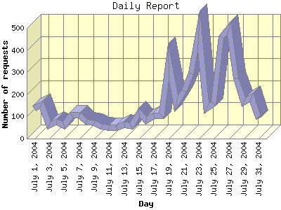

Report generated by Analog 5.91beta1 and Report Magic 2.21
|
Web Server Statistics for "Harish Narayanan (hnarayan) - July 2004" Report generated by Analog 5.91beta1 and Report Magic 2.21 |
The Daily Report identifies the activity for each day within the reporting period. Remember that one page hit can result in several server requests as the images for each page are loaded.

| Day | Number of requests | Number of bytes transferred | Percentage of the bytes | Percentage of the requests | |
|---|---|---|---|---|---|
| 1. | July 1, 2004 | 135 | 1.886 MB | 1.74% | 2.70% |
| 2. | July 2, 2004 | 155 | 4.357 MB | 4.02% | 3.10% |
| 3. | July 3, 2004 | 61 | 831.581 KB | 0.75% | 1.22% |
| 4. | July 4, 2004 | 76 | 1.953 MB | 1.80% | 1.52% |
| 5. | July 5, 2004 | 60 | 1.537 MB | 1.42% | 1.20% |
| 6. | July 6, 2004 | 109 | 3.417 MB | 3.15% | 2.18% |
| 7. | July 7, 2004 | 109 | 4.167 MB | 3.84% | 2.18% |
| 8. | July 8, 2004 | 75 | 1,003.931 KB | 0.90% | 1.50% |
| 9. | July 9, 2004 | 70 | 2.594 MB | 2.39% | 1.40% |
| 10. | July 10, 2004 | 53 | 668.875 KB | 0.60% | 1.06% |
| 11. | July 11, 2004 | 52 | 599.687 KB | 0.54% | 1.04% |
| 12. | July 12, 2004 | 50 | 1.399 MB | 1.29% | 1.00% |
| 13. | July 13, 2004 | 63 | 2.029 MB | 1.87% | 1.26% |
| 14. | July 14, 2004 | 58 | 1.550 MB | 1.43% | 1.16% |
| 15. | July 15, 2004 | 117 | 1.115 MB | 1.03% | 2.34% |
| 16. | July 16, 2004 | 82 | 2.745 MB | 2.53% | 1.64% |
| 17. | July 17, 2004 | 106 | 3.267 MB | 3.01% | 2.12% |
| 18. | July 18, 2004 | 104 | 3.322 MB | 3.06% | 2.08% |
| 19. | July 19, 2004 | 348 | 14.402 MB | 13.29% | 6.95% |
| 20. | July 20, 2004 | 158 | 2.126 MB | 1.96% | 3.16% |
| 21. | July 21, 2004 | 215 | 3.715 MB | 3.43% | 4.29% |
| 22. | July 22, 2004 | 293 | 5.595 MB | 5.16% | 5.85% |
| 23. | July 23, 2004 | 487 | 6.967 MB | 6.43% | 9.73% |
| 24. | July 24, 2004 | 137 | 4.350 MB | 4.01% | 2.74% |
| 25. | July 25, 2004 | 157 | 2.561 MB | 2.36% | 3.14% |
| 26. | July 26, 2004 | 460 | 5.848 MB | 5.39% | 9.19% |
| 27. | July 27, 2004 | 499 | 9.135 MB | 8.43% | 9.97% |
| 28. | July 28, 2004 | 273 | 4.727 MB | 4.36% | 5.45% |
| 29. | July 29, 2004 | 165 | 3.572 MB | 3.29% | 3.29% |
| 30. | July 30, 2004 | 188 | 4.176 MB | 3.85% | 3.75% |
| 31. | July 31, 2004 | 92 | 2.871 MB | 2.65% | 1.84% |
Most active day July 27, 2004 : 253 pages sent. 499 requests handled. 9,578,854.00 served.
Daily average: 161 requests handled. 3.497 MB served.
This report was generated on September 29, 2004 12:11.
Report time frame July 1, 2004 02:33 to July 31, 2004 23:40.
| Web statistics report produced by: | |
 Analog 5.91beta1 Analog 5.91beta1 |  Report Magic 2.21 Report Magic 2.21 |